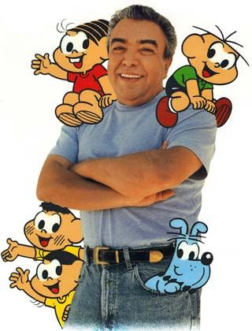
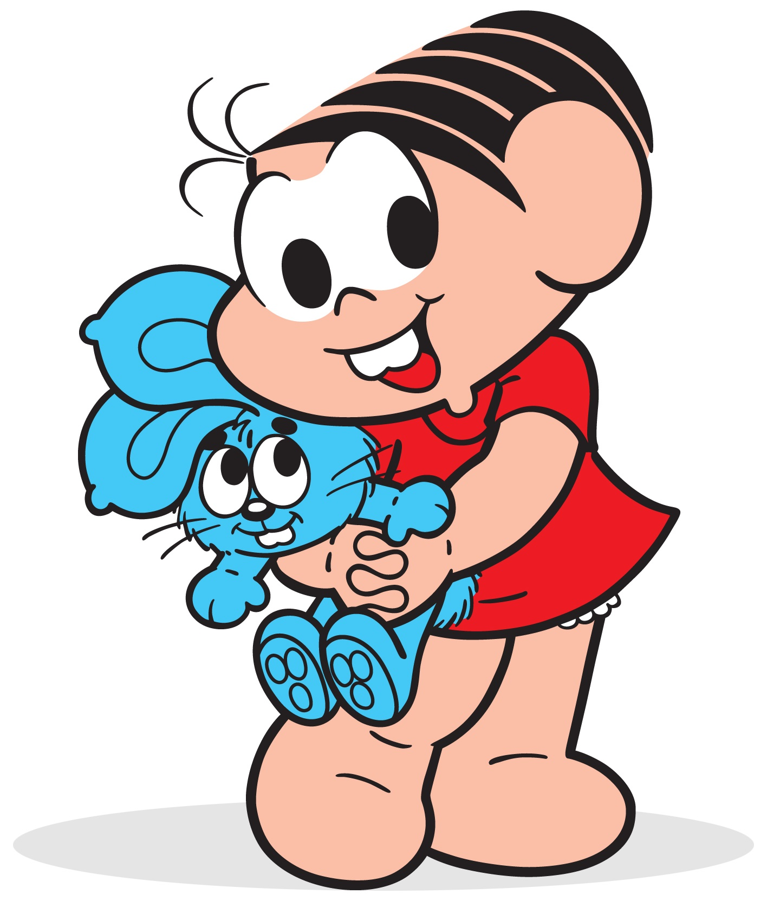

Maurício de Souza
Mais famoso e premiado autor brasileiro de história em quadrinhos

Maurício de Souza e sua criação
Biografia de Maurício de Souza
Mauricio de Sousa (1935) é um cartunista e empresário brasileiro
Criou a "Turma da Mônica", e vários outros personagens de história em quadrinhos
É membro da Academia Paulista de Letras, ocupando a cadeira nº. 24.
É o mais famoso e premiado autor brasileiro de história em quadrinhos.
Maurício passou a maior parte de sua infância e juventude em Mogi das Cruzes.
Sua mãe, Petronilha, era poeta e sua casa estava sempre cheia de artistas.

Desde pequeno, sua brincadeira favorita era desenhar e assim ele enchia as páginas de seus cadernos escolares.
A primeira vez que viu uma revista em quadrinhos ele se encantou.
Desenhou seu primeiro personagem, que ele chamou de Capitão Picolé.
Mais tarde, passou a ilustrar pôsteres e cartazes para os comerciantes da região.
Com 19 anos, mudou-se para São Paulo querendo ser ilustrador.
"Eu faço histórias para contar histórias"
-- Maurício Souza